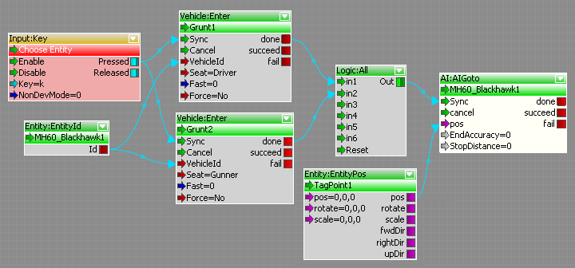

Редактор Flowgraph позволяет непрограммистам визуально создавать глобальную логику AI.
Пример: два ИИ встречаются в вертолете и улетают.

Поэкспериментируйте с функциями отладчика потокового графа, например. подсветка распространения сигнала и точки останова.
Рассмотрите возможность подключения выхода «Id» Сущность: EntityId с вводом "EntityId" (первый ввод) AI:AIGoto.